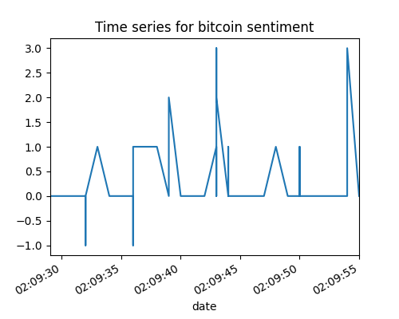
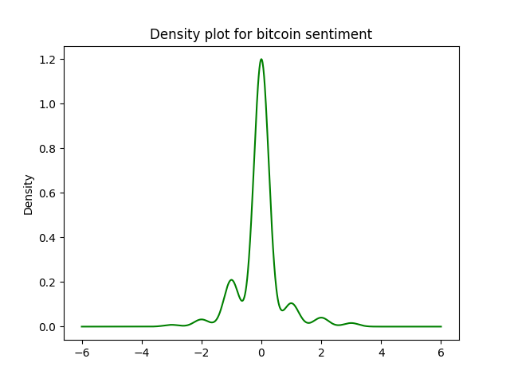
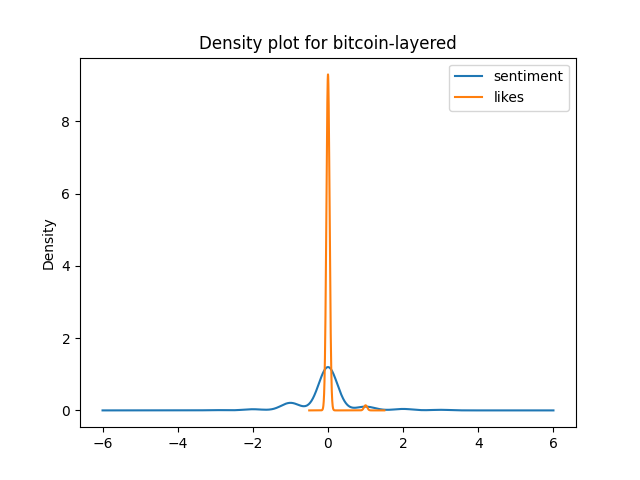
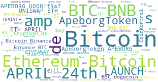
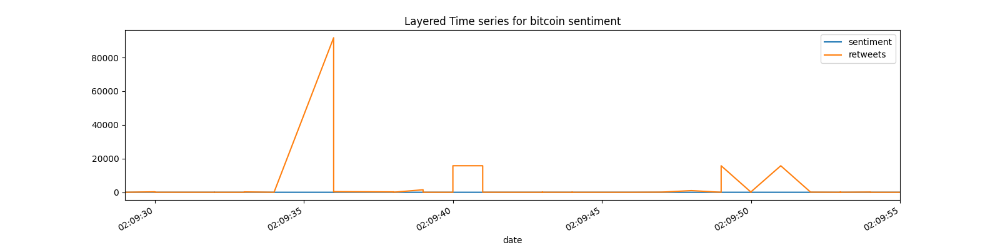

Home
Bitcoin
Ethereum
Algorand
Bitcoin Data
Ethereum Data
Bitcoin
Ethereum
Algorand
Bitcoin data
Ethereum data
>
Bitcoin Dataset Sentimental Analysis and Visualization
Bitcoin's Time-Series Analysis

Plotting the sentiments of twitter users over bitcoin for the perios of the time specicfied while harvesting
Sentiment-Density Graph for bitcoin

Layered Sentiment-Density Graph for bitcoin

Bitcoin - Wordcloud

Word cloud for the harvested tweets after cleaning tweets from stopwords.
Layered Graphs for bitcoin
